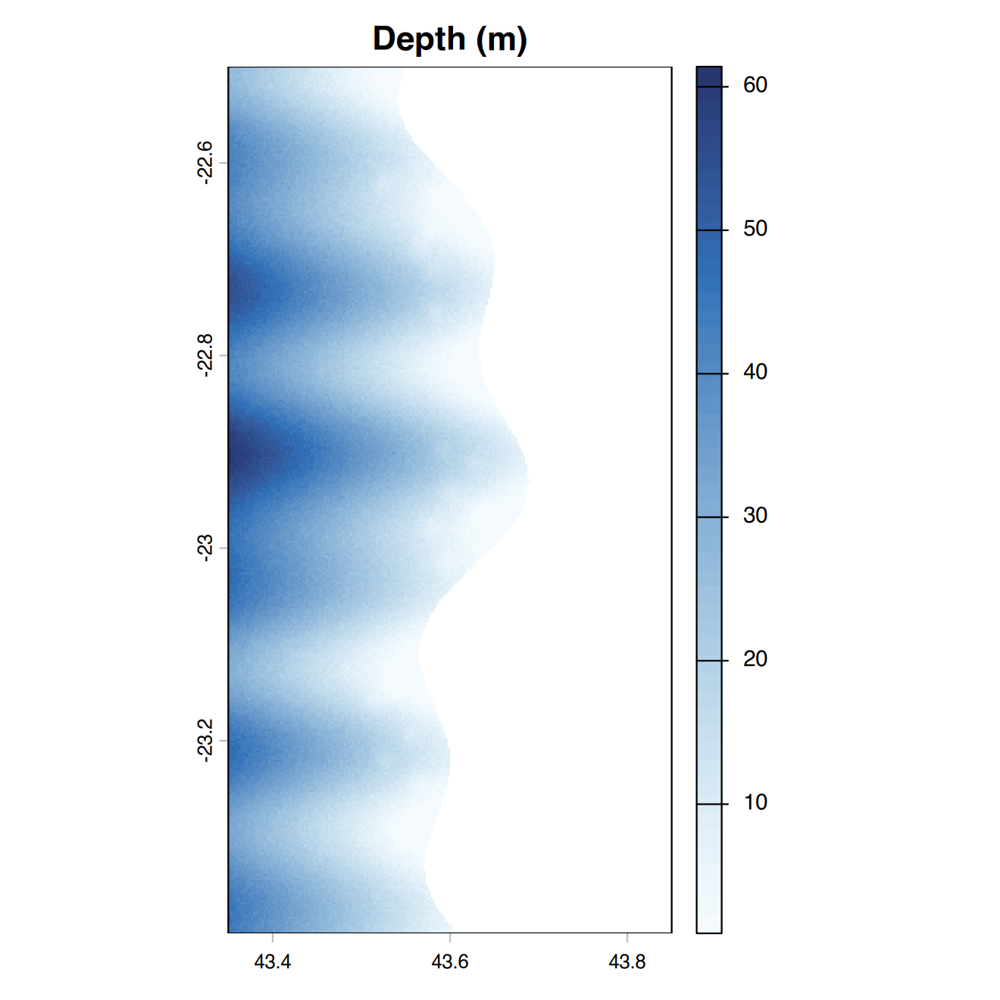
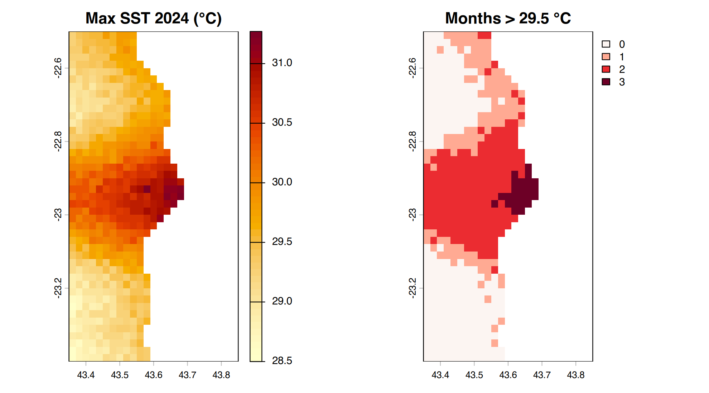
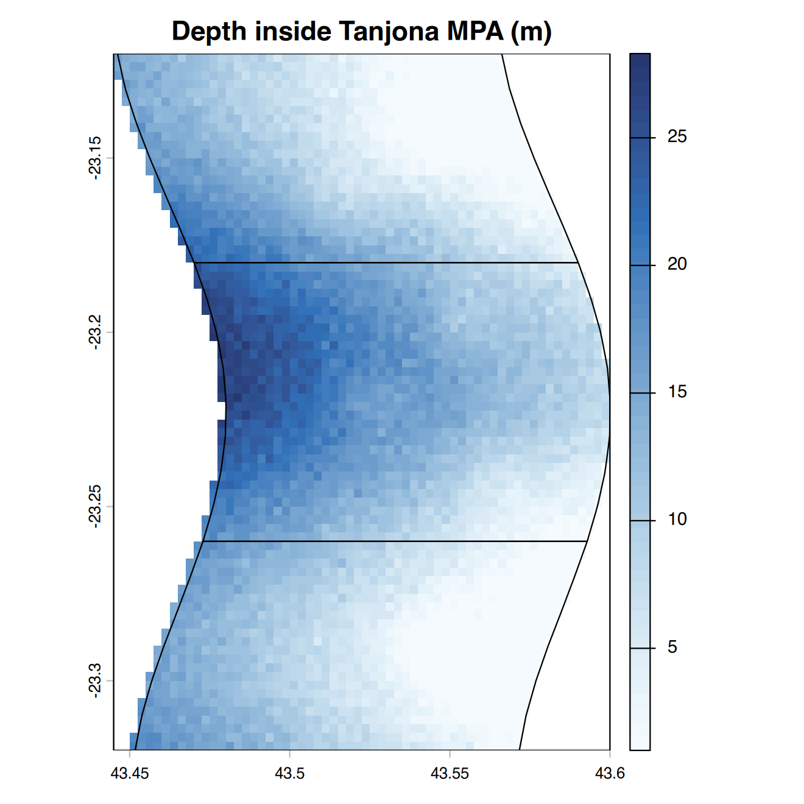
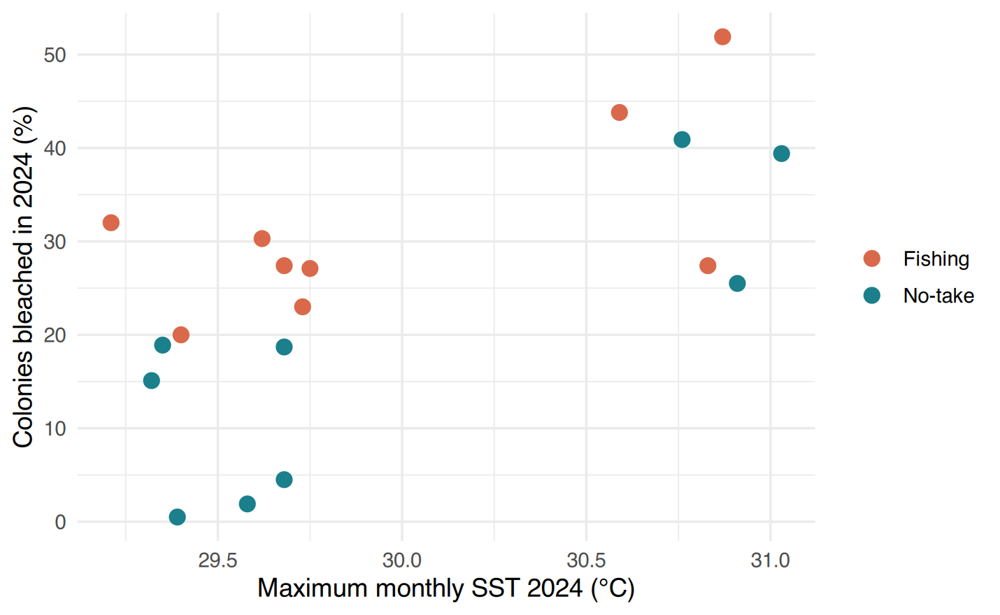

A6 · Rasters with terraA6 · Rasters avec terra
~3 h
By the end of this session you will be able to
- describe a raster (grid, resolution, extent, CRS,
layers,
NAcells) and read it withterra::rast(); - summarise and plot raster values, and handle a multi-layer raster (12 months);
- crop, mask, reproject and classify a raster;
- do raster algebra (maximum per cell, number of months above a threshold);
- extract raster values at points and compute zonal statistics per polygon — and join them to your field data.
À la fin de cette séance vous saurez
- décrire un raster (grille, résolution, étendue,
SCR, couches, cellules
NA) et le lire avecterra::rast(); - résumer et tracer les valeurs d’un raster, et manipuler un raster multi-couches (12 mois) ;
- découper, masquer, reprojeter et reclasser un raster ;
- faire de l’algèbre de rasters (maximum par cellule, nombre de mois au-dessus d’un seuil) ;
- extraire les valeurs d’un raster à des points et calculer des statistiques zonales par polygone — et les joindre à vos données de terrain.
Data of this session (simulated). Two rasters in longitude/latitude (WGS84), as you would download them:
bathymetry.tif— water depth (m) on a grid of 0.0025° (≈ 270 m), interpolated from echo-sounder transects run by the NGO boat in 2023; land cells areNA. An interpolated surface is smooth: it does not see a coral bommie under the boat, so it can differ from the depth measured on the spot at a site.sst_2024.tif— monthly mean sea surface temperature (°C) for 2024, 12 layers on a coarser grid of 0.02° (≈ 2 km), like the satellite products of NOAA Coral Reef Watch or Copernicus. In February–April 2024 a marine heatwave warmed the centre of the bay.
The question of the MPA managers: did the reefs that were
hottest in 2024 bleach the most? (bleaching data:
reef_monitoring.csv). Type: raster (continuous
values on a regular grid).
Données de cette séance (simulées). Deux rasters en longitude/latitude (WGS84), tels que vous les téléchargeriez :
bathymetry.tif— profondeur d’eau (m) sur une grille de 0,0025° (≈ 270 m), interpolée à partir de transects à l’échosondeur parcourus par le bateau de l’ONG en 2023 ; les cellules de terre sontNA. Une surface interpolée est lisse : elle ne voit pas un pâté corallien sous le bateau, elle peut donc différer de la profondeur mesurée sur place à un site.sst_2024.tif— température de surface de la mer moyenne mensuelle (°C) en 2024, 12 couches sur une grille plus grossière de 0,02° (≈ 2 km), comme les produits satellite de NOAA Coral Reef Watch ou de Copernicus. En février–avril 2024, une vague de chaleur marine a réchauffé le centre de la baie.
La question des gestionnaires d’AMP : les récifs les plus
chauds en 2024 ont-ils le plus blanchi ? (données de
blanchissement : reef_monitoring.csv). Type :
raster (valeurs continues sur une grille régulière).
What is a raster?Qu’est-ce qu’un raster ?
A raster is a grid of cells (pixels), each holding one value: depth, temperature, chlorophyll, land cover class… It is described by its extent (the rectangle it covers), its resolution (cell size), its CRS, and its number of layers (bands, dates). Vector data describe objects (a site, a zone); rasters describe continuous surfaces.
Un raster est une grille de cellules (pixels), chacune contenant une valeur : profondeur, température, chlorophylle, classe d’occupation du sol… Il est décrit par son étendue (le rectangle couvert), sa résolution (taille des cellules), son SCR, et son nombre de couches (bandes, dates). Les données vecteur décrivent des objets (un site, une zone) ; les rasters décrivent des surfaces continues.
bathy <- rast("data/advanced/bathymetry.tif")
bathy # dimensions, resolution, extent, CRS, name, min/max#> class : SpatRaster
#> size : 360, 200, 1 (nrow, ncol, nlyr)
#> resolution : 0.0025, 0.0025 (x, y)
#> extent : 43.35, 43.85, -23.4, -22.5 (xmin, xmax, ymin, ymax)
#> coord. ref. : lon/lat WGS 84 (EPSG:4326)
#> source : bathymetry.tif
#> name : depth_m
#> min value : 1
#> max value : 61.400002#> [1] 0.0025 0.0025#> [1] 72000#> mean min max
#> depth_m 23.4882 1 61.4Functions and arguments used here
| Function / argument | What it does | Value it expects |
|---|---|---|
rast(x) |
reads a raster file (.tif) as a
SpatRaster |
path of the file |
res(x), ncell(x) |
cell size (x, y) in the unit of the CRS; number of cells | a SpatRaster |
global(x, fun, na.rm) |
a statistic computed over all the cells of each layer | |
fun |
the statistic(s), as text | "mean", "min", "max",
"sum", "sd", or c(...) |
Fonctions et arguments utilisés ici
| Fonction / argument | Ce qu’il fait | Valeur attendue |
|---|---|---|
rast(x) |
lit un fichier raster (.tif) sous forme de
SpatRaster |
chemin du fichier |
res(x), ncell(x) |
taille des cellules (x, y) dans l’unité du SCR ; nombre de cellules | un SpatRaster |
global(x, fun, na.rm) |
une statistique calculée sur toutes les cellules de chaque couche | |
fun |
la ou les statistiques, en texte | "mean", "min", "max",
"sum", "sd", ou c(...) |

Functions and arguments used here
| Function / argument | What it does | Value it expects |
|---|---|---|
plot(raster, col, main) |
draws the raster with a colour legend | |
hcl.colors(n, palette, rev) |
n colours from a named palette ("Blues",
"YlOrRd", "viridis"…); rev = TRUE
reverses them |
a number; a palette name |
rev(x) |
reverses a vector (Beginner Session 2): here deep = dark blue |
Fonctions et arguments utilisés ici
| Fonction / argument | Ce qu’il fait | Valeur attendue |
|---|---|---|
plot(raster, col, main) |
dessine le raster avec une légende de couleurs | |
hcl.colors(n, palette, rev) |
n couleurs d’une palette nommée ("Blues",
"YlOrRd", "viridis"…) ;
rev = TRUE les inverse |
un nombre ; un nom de palette |
rev(x) |
inverse un vecteur (séance 2 du niveau débutant) : ici profond = bleu foncé |
terra (Hijmans) replaces the older raster
package: same ideas, much faster, and functions with similar names. Its
vector type is SpatVector; vect(x) turns an sf
object into one, st_as_sf(v) goes back.
terra (Hijmans) remplace l’ancien package
raster : mêmes idées, bien plus rapide, et des fonctions
aux noms proches. Son type vecteur est SpatVector ;
vect(x) transforme un objet sf en SpatVector,
st_as_sf(v) fait le chemin inverse.
A raster with 12 layersUn raster à 12 couches
#> [1] 12#> [1] "sst_2024_01" "sst_2024_02" "sst_2024_03"#> [1] "2024-01-15" "2024-02-15" "2024-03-15"
Functions and arguments used here
| Function / argument | What it does | Value it expects |
|---|---|---|
nlyr(x), names(x),
time(x) |
number of layers, their names, their dates | a SpatRaster |
sst[[1:6]] |
layers 1 to 6 (double brackets select layers, as columns of a list) | positions or names |
range (in plot()) |
the same colour scale for every map, so that they can be compared | c(min, max) |
nc |
number of columns of maps | a whole number |
Fonctions et arguments utilisés ici
| Fonction / argument | Ce qu’il fait | Valeur attendue |
|---|---|---|
nlyr(x), names(x),
time(x) |
nombre de couches, leurs noms, leurs dates | un SpatRaster |
sst[[1:6]] |
couches 1 à 6 (les doubles crochets sélectionnent des couches, comme les éléments d’une liste) | positions ou noms |
range (in plot()) |
la même échelle de couleurs pour toutes les cartes, pour pouvoir les comparer | c(min, max) |
nc |
nombre de colonnes de cartes | un nombre entier |
# one value per layer: the monthly mean over the whole bay
data.frame(month = format(time(sst), "%b"),
sst_mean = round(global(sst, "mean", na.rm = TRUE)$mean, 2))#> month sst_mean
#> 1 Jan 28.80
#> 2 Feb 29.71
#> 3 Mar 29.41
#> 4 Apr 28.31
#> 5 May 26.20
#> 6 Jun 24.80
#> 7 Jul 24.01
#> 8 Aug 24.10
#> 9 Sep 24.90
#> 10 Oct 26.10
#> 11 Nov 27.20
#> 12 Dec 28.21Raster algebraAlgèbre de rasters
Arithmetic on rasters works cell by cell, like
vector maths in Beginner Session 2. Functions that summarise layers
(max, mean, sum…) give one value
per cell.
L’arithmétique sur les rasters se fait cellule par
cellule, comme le calcul vectoriel de la séance débutant 2. Les
fonctions qui résument les couches (max, mean,
sum…) donnent une valeur par cellule.
sst_max <- max(sst) # hottest month of 2024, for each cell
hot_mons <- sum(sst > 29.5) # TRUE = 1: number of months above 29.5 °C
par(mfrow = c(1, 2))
plot(sst_max, col = hcl.colors(50, "YlOrRd", rev = TRUE), main = "Max SST 2024 (°C)")
plot(hot_mons, col = hcl.colors(4, "Reds", rev = TRUE), main = "Months > 29.5 °C")
Functions and arguments used here
| Function / argument | What it does | Value it expects |
|---|---|---|
max(sst), mean(sst),
sum(sst > 29.5) |
on a multi-layer raster: computed cell by cell across the layers, the result is one layer | |
par(mfrow = c(1, 2)) |
two plots side by side (Beginner Session 7) |
Fonctions et arguments utilisés ici
| Fonction / argument | Ce qu’il fait | Valeur attendue |
|---|---|---|
max(sst), mean(sst),
sum(sst > 29.5) |
sur un raster à plusieurs couches : calculé cellule par cellule à travers les couches, le résultat est une seule couche | |
par(mfrow = c(1, 2)) |
deux graphiques côte à côte (séance 7 du niveau débutant) |
Watch the difference: global(sst, "max") gives one
number per layer (over all cells),
max(sst) gives one value per cell (over
all layers). And global() wants the function name in
quotes, while extract(..., fun = mean) below wants it
without quotes.
Attention à la différence : global(sst, "max") donne un
nombre par couche (sur toutes les cellules),
max(sst) donne une valeur par cellule (sur
toutes les couches). Et global() veut le nom de la fonction
entre guillemets, alors que extract(..., fun = mean) plus
bas le veut sans guillemets.
The idea of counting the time above a threshold is the basis of real heat-stress indicators such as the Degree Heating Weeks of NOAA Coral Reef Watch (accumulated heat above the usual summer maximum over 12 weeks). Here we use a simple monthly version to learn the method.
L’idée de compter le temps au-dessus d’un seuil est à la base de vrais indicateurs de stress thermique comme les Degree Heating Weeks de NOAA Coral Reef Watch (chaleur accumulée au-dessus du maximum estival habituel sur 12 semaines). Ici nous utilisons une version mensuelle simple pour apprendre la méthode.
Crop, mask, reproject, classifyDécouper, masquer, reprojeter, reclasser
zones <- st_read("data/advanced/monitoring_gis.gpkg", "mpa_zones", quiet = TRUE)
zones_ll <- vect(st_transform(zones, crs(bathy))) # same CRS as the raster, as SpatVector
tanjona <- zones_ll[zones_ll$mpa == "Tanjona", ]
b_crop <- crop(bathy, tanjona) # keeps the rectangle around Tanjona
b_mask <- mask(b_crop, tanjona) # cells outside the MPA become NA
plot(b_mask, col = rev(hcl.colors(50, "Blues")), main = "Depth inside Tanjona MPA (m)")
lines(tanjona)
Functions and arguments used here
| Function / argument | What it does | Value it expects |
|---|---|---|
crs(x) |
the CRS of a raster (terra’s version of st_crs()) |
|
vect(x) |
converts an sf layer into a terra SpatVector | an sf object or a file path |
crop(x, y) |
cuts the raster to the rectangle around
y |
a raster; a SpatVector or extent |
mask(x, mask) |
sets to NA the cells outside the
polygons |
a raster; a SpatVector |
lines(v) |
adds the outline of the polygons on the map | a SpatVector |
Fonctions et arguments utilisés ici
| Fonction / argument | Ce qu’il fait | Valeur attendue |
|---|---|---|
crs(x) |
le SCR d’un raster (la version terra de st_crs()) |
|
vect(x) |
convertit une couche sf en SpatVector de terra | un objet sf ou un chemin de fichier |
crop(x, y) |
découpe le raster au rectangle autour de
y |
un raster ; un SpatVector ou une étendue |
mask(x, mask) |
met à NA les cellules hors des
polygones |
un raster ; un SpatVector |
lines(v) |
ajoute le contour des polygones sur la carte | un SpatVector |
# Reproject to UTM 38S (metres). "bilinear" for continuous values, "near" for classes.
bathy_utm <- project(bathy, "EPSG:32738", method = "bilinear")
res(bathy_utm) # now in metres#> [1] 272.1323 272.1323# Classify depth into 3 classes: 1 = 0-10 m, 2 = 10-30 m, 3 = > 30 m
rcl <- matrix(c(0, 10, 1, 10, 30, 2, 30, Inf, 3), ncol = 3, byrow = TRUE)
depth_cl <- classify(bathy, rcl)
freq(depth_cl)#> layer value count
#> 1 1 1 7323
#> 2 1 2 17768
#> 3 1 3 12465Functions and arguments used here
| Function / argument | What it does | Value it expects |
|---|---|---|
project(x, y, method) |
reprojects a raster (terra’s st_transform()); cells are
re-computed |
|
y |
the new CRS | "EPSG:32738" or another raster |
method |
how new cell values are computed: "bilinear" (average
of neighbours, continuous values), "near" (nearest cell,
classes) |
text |
matrix(data, ncol, byrow) |
a table of numbers; byrow = TRUE fills it row by row:
each row = from, to, new value |
|
classify(x, rcl) |
replaces value ranges by class numbers | a raster; the matrix rcl |
freq(x) |
number of cells per value | a raster |
Fonctions et arguments utilisés ici
| Fonction / argument | Ce qu’il fait | Valeur attendue |
|---|---|---|
project(x, y, method) |
reprojette un raster (le st_transform() de terra) ; les
cellules sont recalculées |
|
y |
le nouveau SCR | "EPSG:32738" ou un autre raster |
method |
comment les nouvelles valeurs sont calculées :
"bilinear" (moyenne des voisins, valeurs continues),
"near" (cellule la plus proche, classes) |
texte |
matrix(data, ncol, byrow) |
un tableau de nombres ; byrow = TRUE le remplit ligne
par ligne : chaque ligne = de, à, nouvelle valeur |
|
classify(x, rcl) |
remplace des intervalles de valeurs par des numéros de classe | un raster ; la matrice rcl |
freq(x) |
nombre de cellules par valeur | un raster |
st_transform() (sf, vectors) and project()
(terra, rasters) do the same job with different names — and in the other
direction, crs() is terra’s name for sf’s
st_crs().
st_transform() (sf, vecteurs) et project()
(terra, rasters) font le même travail avec des noms différents — et dans
l’autre sens, crs() est le nom terra du
st_crs() de sf.
Reproject vectors rather than rasters when you can: reprojecting a raster resamples its cells (values are interpolated and slightly changed). To extract values, put your points in the CRS of the raster, as below.
Reprojetez les vecteurs plutôt que les rasters quand c’est possible : reprojeter un raster rééchantillonne ses cellules (les valeurs sont interpolées et légèrement modifiées). Pour extraire des valeurs, mettez vos points dans le SCR du raster, comme ci-dessous.
Extract values at sitesExtraire les valeurs aux sites
sites <- st_read("data/advanced/monitoring_gis.gpkg", "reef_sites", quiet = TRUE)
sites_ll <- vect(st_transform(sites, crs(sst))) # points in the raster's CRS
sites$depth_raster <- round(extract(bathy, sites_ll)$depth_m, 1) # extract() adds an ID column
sites$sst_max <- round(extract(sst_max, sites_ll)[, 2], 2)
sites$hot_months <- extract(hot_mons, sites_ll)[, 2]
head(st_drop_geometry(sites)[, c("site_id", "zone", "depth_m", "depth_raster", "sst_max", "hot_months")], 6)#> site_id zone depth_m depth_raster sst_max hot_months
#> 1 R01 No-take 7.1 3.1 29.68 1
#> 2 R02 No-take 6.6 10.0 29.68 1
#> 3 R03 No-take 3.5 12.4 29.58 1
#> 4 R04 Fishing 7.2 12.0 29.40 0
#> 5 R05 Fishing 10.9 1.0 29.68 1
#> 6 R06 Fishing 11.7 12.1 29.73 1Functions and arguments used here
| Function / argument | What it does | Value it expects |
|---|---|---|
extract(x, y) |
the value of the raster under each point of y; returns
a data frame with a first column ID then one column per
layer |
a raster; a SpatVector in the same CRS |
[, 2], $depth_m |
take the column of values (not ID) |
Fonctions et arguments utilisés ici
| Fonction / argument | Ce qu’il fait | Valeur attendue |
|---|---|---|
extract(x, y) |
la valeur du raster sous chaque point de y ; renvoie un
data frame avec une première colonne ID puis une colonne
par couche |
un raster ; un SpatVector dans le même SCR |
[, 2], $depth_m |
prendre la colonne des valeurs (pas ID) |
Compare depth_m (measured on the spot) with
depth_raster (interpolated surface): they differ, sometimes
a lot. A raster value is the value of a cell of 270 m,
not of your exact spot — keep it in mind when you interpret extracted
values.
Comparez depth_m (mesurée sur place) et
depth_raster (surface interpolée) : elles diffèrent,
parfois beaucoup. Une valeur de raster est celle d’une cellule
de 270 m, pas de votre point exact — gardez-le en tête pour
interpréter les valeurs extraites.
Did the hottest reefs bleach the most?Les récifs les plus chauds ont-ils le plus blanchi ?
reef <- read.csv("data/advanced/reef_monitoring.csv")
bleach24 <- reef %>% filter(year == 2024) %>% group_by(site_id) %>%
summarise(bleached = mean(bleached_pct), .groups = "drop")
heat <- st_drop_geometry(sites) %>% select(site_id, mpa, zone, sst_max) %>% left_join(bleach24, by = "site_id")
ggplot(heat, aes(sst_max, bleached, colour = zone)) +
geom_point(size = 3) +
scale_colour_manual(values = c("No-take" = "#1b7f8c", "Fishing" = "#d9694a")) +
labs(x = "Maximum monthly SST 2024 (°C)", y = "Colonies bleached in 2024 (%)", colour = NULL) +
theme_minimal(base_size = 12)
#>
#> Pearson's product-moment correlation
#>
#> data: heat$sst_max and heat$bleached
#> t = 3.4559, df = 16, p-value = 0.003253
#> alternative hypothesis: true correlation is not equal to 0
#> 95 percent confidence interval:
#> 0.2690020 0.8585778
#> sample estimates:
#> cor
#> 0.6537662The hottest sites bleached more (a positive correlation), and at a given temperature the No-take sites tend to bleach less. With 18 sites, and temperature on a 2 km grid, this is a clue, not a proof — but it is exactly the kind of result that joins field monitoring and remote sensing.
Les sites les plus chauds ont davantage blanchi (corrélation positive), et à température égale les sites No-take ont tendance à moins blanchir. Avec 18 sites, et une température sur une grille de 2 km, c’est un indice, pas une preuve — mais c’est exactement le type de résultat qui relie suivi de terrain et télédétection.
Zonal statisticsStatistiques zonales
extract() with polygons and a function
gives one value per polygon: the mean depth of each MPA zone, the
maximum temperature of each MPA…
extract() avec des polygones et une
fonction donne une valeur par polygone : la profondeur moyenne de chaque
zone d’AMP, la température maximale de chaque AMP…
zs <- extract(bathy, zones_ll, fun = mean, na.rm = TRUE) # one row per zone
zones$depth_mean <- round(zs$depth_m, 1)
zones$sst_max <- round(extract(sst_max, zones_ll, fun = max, na.rm = TRUE)[, 2], 2)
st_drop_geometry(zones)[, c("mpa", "zone", "depth_mean", "sst_max")]#> mpa zone depth_mean sst_max
#> 1 Ankaramena Fishing 9.7 29.80
#> 2 Ankaramena No-take 10.0 29.92
#> 3 Ankaramena Fishing 15.3 29.99
#> 4 Nosy Fasika Fishing 15.9 31.04
#> 5 Nosy Fasika No-take 7.6 31.27
#> 6 Nosy Fasika Fishing 12.2 31.10
#> 7 Tanjona Fishing 8.4 29.94
#> 8 Tanjona No-take 14.5 29.56
#> 9 Tanjona Fishing 7.3 29.57Functions and arguments used here
| Function / argument | What it does | Value it expects |
|---|---|---|
extract(x, polygons, fun, na.rm) |
with polygons and fun: one value per
polygon (zonal statistic) |
|
fun |
the function applied to the cells of each polygon, without quotes | mean, max, min,
sum |
Fonctions et arguments utilisés ici
| Fonction / argument | Ce qu’il fait | Valeur attendue |
|---|---|---|
extract(x, polygons, fun, na.rm) |
avec des polygones et fun : une valeur
par polygone (statistique zonale) |
|
fun |
la fonction appliquée aux cellules de chaque polygone, sans guillemets | mean, max, min,
sum |
Try it. Compute the area of shallow water
(0–10 m) in each MPA: classify the depth, keep class 1, then
expanse() (area of the non-NA cells) inside each MPA with
mask(). Why is expanse() better than counting
cells × 0.0025² here?
À vous. Calculez la surface d’eau peu
profonde (0–10 m) dans chaque AMP : reclassez la profondeur,
gardez la classe 1, puis expanse() (surface des cellules
non NA) à l’intérieur de chaque AMP avec mask(). Pourquoi
expanse() est-il meilleur ici que compter les cellules ×
0,0025² ?
Writing rastersÉcrire des rasters
writeRaster(sst_max, here::here("data", "derived", "sst_max_2024.tif"), overwrite = TRUE)
writeRaster(depth_cl, here::here("data", "derived", "depth_classes.tif"), datatype = "INT1U", overwrite = TRUE)Functions and arguments used here
| Function / argument | What it does | Value it expects |
|---|---|---|
writeRaster(x, filename, overwrite, datatype) |
writes a raster file (GeoTIFF for .tif) |
|
overwrite |
TRUE replaces an existing file |
TRUE / FALSE (default) |
datatype |
how values are stored; "INT1U" = whole numbers 0–255
(small file for classes); default "FLT4S" = decimals |
text |
Fonctions et arguments utilisés ici
| Fonction / argument | Ce qu’il fait | Valeur attendue |
|---|---|---|
writeRaster(x, filename, overwrite, datatype) |
écrit un fichier raster (GeoTIFF pour .tif) |
|
overwrite |
TRUE remplace un fichier existant |
TRUE / FALSE (défaut) |
datatype |
comment les valeurs sont stockées ; "INT1U" = entiers
0–255 (petit fichier pour des classes) ; par défaut "FLT4S"
= décimaux |
texte |
Writing a file: overwrite = TRUE in terra,
delete_dsn / append = FALSE in sf (Session
A5), overwrite again in file.copy()… each
package chose its own word.
Écrire un fichier : overwrite = TRUE dans terra,
delete_dsn / append = FALSE dans sf (séance
A5), encore overwrite dans file.copy()… chaque
package a choisi son propre mot.
GeoTIFF (.tif) is the standard format; it opens in QGIS.
Large rasters do not belong in Git (Session A2): keep them in
data/raw/ listed in .gitignore, and write in
the README where to download them.
Le GeoTIFF (.tif) est le format standard ; il s’ouvre
dans QGIS. Les gros rasters n’ont pas leur place dans Git (séance A2) :
gardez-les dans data/raw/ listé dans
.gitignore, et indiquez dans le README où les
télécharger.
Application work & quizTravail d’application et quiz
Application work A6
Script R/06_rasters.R (copy the two .tif
files into data/raw/).
- How many cells does
bathymetry.tifhave? - Extract the raster depth at the 18 reef sites: mean of these values (2 decimals)?
- Which site had the highest SST in March 2024 (layer 3)?
- Compute the number of months above 29.5 °C for each cell. What is the maximum over the bay?
- Correlation (Pearson) between the maximum SST 2024 at each site and the mean % of bleached colonies in 2024 (2 decimals)?
- Mean raster depth of the No-take zone of Nosy Fasika (zonal statistic, 1 decimal)?
- Save the max SST raster and a CSV table of the sites with their extracted values.
Travail d’application A6
Script R/06_rasters.R (copiez les deux fichiers
.tif dans data/raw/).
- Combien de cellules contient
bathymetry.tif? - Extrayez la profondeur du raster aux 18 sites récifaux : moyenne de ces valeurs (2 décimales) ?
- Quel site avait la SST la plus élevée en mars 2024 (couche 3) ?
- Calculez le nombre de mois au-dessus de 29,5 °C pour chaque cellule. Quel est le maximum sur la baie ?
- Corrélation (Pearson) entre la SST maximale 2024 à chaque site et le % moyen de colonies blanchies en 2024 (2 décimales) ?
- Profondeur moyenne du raster dans la zone No-take de Nosy Fasika (statistique zonale, 1 décimale) ?
- Enregistrez le raster de SST maximale et un tableau CSV des sites avec leurs valeurs extraites.
extract() returns a data frame whose first
column is an ID: take the second column ([, 2]) or
the column named like the layer. Put the sites in the CRS of the raster
first: vect(st_transform(sites, crs(sst))). For question 5,
make sure both vectors are in the same site order (join
by site_id).
extract() renvoie un data frame dont la première
colonne est un ID : prenez la deuxième colonne
([, 2]) ou la colonne qui porte le nom de la couche. Mettez
d’abord les sites dans le SCR du raster :
vect(st_transform(sites, crs(sst))). Pour la question 5,
vérifiez que les deux vecteurs sont dans le même ordre de
sites (jointure par site_id).
library(terra); library(sf); library(dplyr); library(here)
bathy <- rast(here("data", "raw", "bathymetry.tif")); sst <- rast(here("data", "raw", "sst_2024.tif"))
ncell(bathy) # 1
sites <- st_read(here("data", "raw", "monitoring_gis.gpkg"), "reef_sites")
sv <- vect(st_transform(sites, crs(bathy)))
mean(extract(bathy, sv)$depth_m) # 2
march <- extract(sst[[3]], sv)[, 2]; sites$site_id[which.max(march)] # 3
global(sum(sst > 29.5), "max", na.rm = TRUE) # 4
sites$sst_max <- extract(max(sst), sv)[, 2]
reef <- read.csv(here("data", "raw", "reef_monitoring.csv"))
b24 <- reef %>% filter(year == 2024) %>% group_by(site_id) %>% summarise(bleached = mean(bleached_pct))
d <- left_join(st_drop_geometry(sites), b24, by = "site_id")
cor(d$sst_max, d$bleached) # 5
zones <- st_read(here("data", "raw", "monitoring_gis.gpkg"), "mpa_zones")
zones$depth_mean <- extract(bathy, vect(st_transform(zones, crs(bathy))), fun = mean, na.rm = TRUE)$depth_m
filter(st_drop_geometry(zones), mpa == "Nosy Fasika", zone == "No-take") # 6
writeRaster(max(sst), here("data", "derived", "sst_max_2024.tif"), overwrite = TRUE) # 7
write.csv(d, here("outputs", "tables", "sites_heat_bleaching_2024.csv"), row.names = FALSE)